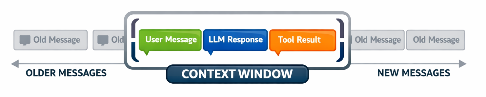

class: center, middle, inverse count: false # Context Management Strategies --- # Your Budget Is Hit — Now What? In Lecture 4.1 we set a context budget — 80% of the window. When you cross that threshold, you need a strategy. This lecture covers three, from simplest to most powerful. ??? Brief bridge from 4.1. Students already understand why — now they need the how. --- # Strategy 1: Sliding Window Keep the system prompt and the **last N messages**. Drop everything older. ```python def sliding_window(messages, system, max_messages=20): return [system] + messages[-max_messages:] ``` - Simple to implement — one line of code - Preserves recency — the model sees recent context - Loses early context — anything before the window is gone - No cost — no extra API calls <p></p> ??? This is the baseline — "good enough for simple tasks." The one-liner makes it concrete. --- # When Sliding Window Works **Good fit:** - **Short tasks** — agent finishes within the window, no information lost - **Stateless interactions** — Q&A, simple chat, early messages don't matter - **Cost-sensitive applications** — no extra API calls **When it fails:** - The user said something important 30 messages ago — gone - The agent made a decision early that affects later steps — gone - Multi-step tasks where early context matters for coherence .warning[Sliding window is simple but lossy. For agents doing complex, multi-step tasks, you need something smarter.] ??? The failure cases motivate selective preservation and compaction. --- # Strategy 2: Selective Preservation Instead of keeping the last N messages blindly, **classify messages by importance** and keep the ones that matter. .split-left[ ### Keep - **System prompt** — always - **Key decisions** — committed plans, confirmed directions - **Current goals** — what the agent is working on now - **Recent messages** — last few exchanges for continuity ] .split-right[ ### Drop - **Old tool results** — file contents already acted on - **Superseded plans** — agent changed direction - **Redundant information** — same file read twice ] <div class="clear"></div> .callout[Not all messages are equal.] ??? This is the conceptual framework. Implementation is more complex — you need to tag or classify messages. Students build this in Module 9. --- # The Classification Problem Selective preservation is more powerful, but harder to implement. How do you decide which messages are important? **Approaches:** - **Role-based rules** — always keep system, always keep the last user message, always keep tool call decisions - **Recency + type** — keep the last 10 verbatim, keep all "decision" messages regardless of age - **Manual tags** — agent explicitly marks messages as important ```python def selective_preserve(messages, system, keep_last=10): important = [m for m in messages[:-keep_last] if m.get("important") or m["role"] == "system"] recent = messages[-keep_last:] return [system] + important + recent ``` .info[The full implementation comes later in the course. For now, understand the principle.] ??? The pseudocode shows the pattern without being a complete implementation. Students need the concept; the engineering comes later. --- # Strategy 3: Compaction The most powerful strategy: use the **LLM itself** to summarize the conversation, then restart with the summary. -- **How it works:** 1. Conversation hits the budget threshold 2. Send the conversation to the LLM with a summarization prompt 3. Replace the conversation history with the summary 4. Continue from the summary as starting context -- **Trade-offs:** - **Preserves meaning** — the LLM extracts what matters, not just what's recent - **Costs an API call** — summarization isn't free - **Lossy by design** — the summary is shorter than the original, so detail is lost ??? Compaction is the strategy that gets the most use in production agents. You spend tokens now to save tokens later. --- # What to Preserve in Compaction .split-left[ .compact-list[ ### Preserve - **Decisions made** — what was chosen - **Current goals** — what's being worked on - **Unresolved items** — what's still pending - **Key facts** — languages, frameworks, paths ### Discard - **Raw tool outputs** — already acted on - **Superseded plans** — direction changed - **Redundant exchanges** — already answered - **Intermediate reasoning** — keep decisions only ] ] .split-right[ <img src="compaction.png" style="max-width:95%;"/> ] <div class="clear"></div> ??? The preserve/discard list is the most practically useful part. Students will use this framework when writing compaction prompts. --- # OpenClaw: Compaction in Production .split-left[ **OpenClaw** — open-source AI agent, ~247K GitHub stars — uses exactly this pattern. - Context approaches limit → triggers a **silent turn** - Silent turn summarizes conversation into durable memory (Markdown files) - Conversation restarts with summary injected as context - User sees nothing — agent just keeps working .callout[Auto-compaction is the most common context management pattern in production agents. The core idea — summarize and restart — is universal.] ] .split-right[ <img src="openclaw.png" style="max-width:85%;"/> ] <div class="clear"></div> ??? OpenClaw reference connects to the recurring case study. The "silent turn" concept is concrete and memorable. --- # Live Demo: Compacting a Conversation .small-code[ ```python def compact_conversation(messages): response = client.messages.create( model="claude-haiku-4-5-20251001", max_tokens=1024, * messages=[{"role": "user", * "content": COMPACTION_PROMPT + format_conversation(messages)}] ) summary = response.content[0].text * return [{"role": "user", "content": f"[Prior conversation summary]\n{summary}"}, * {"role": "assistant", "content": "Understood. I'll continue from this context."}] ``` ] The compacted conversation **replaces the full history.** The agent continues as if the summary were the entire prior conversation. .info[The full compaction prompt is in `compaction_demo.py` — it specifies exactly what to preserve and discard.] ??? Run compaction_demo.py. Show the before (full conversation with token count) and after (compacted summary with token count). The token reduction is the payoff. --- # Choosing a Strategy | | Sliding Window | Selective Preservation | Compaction | |---|---|---|---| | **Simplicity** | One line of code | Moderate — needs classification | Complex — extra API call | | **Information loss** | Drops everything old | Keeps tagged items | LLM decides what matters | | **Cost** | Free | Free | Costs a summarization call | | **Best for** | Short/stateless tasks | Multi-step with milestones | Long-running complex tasks | ### Next: how to keep context small in the first place — designing tools that return minimal, high-signal results. ??? The table is the reference students will come back to. Transition to 4.3 — token-efficient tool design.